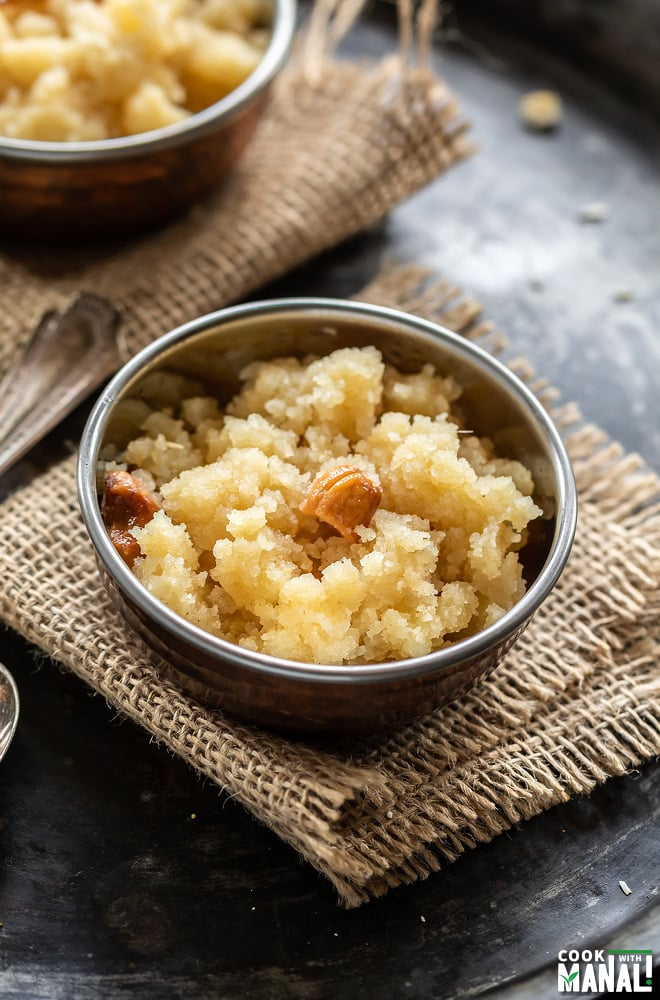

HOME
HALWA

Ingredients:
- 1/2 cup Sooji (semolina/rava)
- 1/3 cup Ghee (clarified butter) (or 1/4 cup)
- 1¼ cups Water
- 1/2 cup Sugar
- Some dry fruits
Directions:
- Pour 1¼ cups water in a small saucepan and bring it to boil over medium flame, it will take around 3-4 minutes. Remove it from the flame and keep aside until you reach step-4 below.
- Take sooji in a heavy based pan, add ghee and heat it over medium flame.
- Stir and mix using spatula.
- Roast it until golden-brown. It will take anywhere between 8 to 10 minutes.
- Reduce flame to low; slowly add boiled water and mix by stirring constantly (add water only in small incremental quantities because it will splutter as soon as you add it).
- Stir and cook to avoid any lump formation.
- Increase flame to medium and cook until all water gets absorbed. Add sugar and cardamom powder and dry fruits.
- The suji halwa is now ready for serving.
Tips
Replace water with milk to enhance its taste and make it softer. The recipe remains exactly the same.
Dissolve 4-5 saffron strands in 2 tablespoons milk for 5 minutes and add it in the mixture in step-5 to make traditional kesar and badam sooji ka halwa.
see more recipies below:
Rice